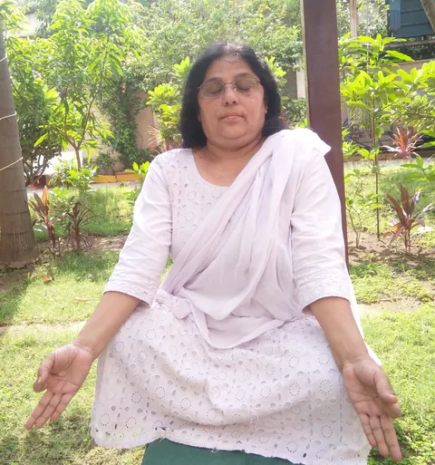

“Healing Naturally, Living Fully”
Naturopathy is rooted in healing and wellness; ensuring to represent these principles.

Dr. Nirmala Gupta
Founder, Shree Sahaj Nature Cure Foundation
Dr. Nirmala Gupta is a compassionate healer and visionary who has devoted her life to the service of holistic well-being. With decades of experience in naturopathy, yoga therapy, and energy healing, she blends traditional wisdom with modern understanding to guide individuals toward balance in body, mind, and soul.
Known for her deep empathy and heartfelt approach, Dr. Gupta believes that true healing goes beyond physical treatment—it comes from nurturing the spirit and empowering people with knowledge. Her greatest joy lies not in keeping her expertise to herself, but in generously sharing it with others so they too can embrace natural methods of self-care and healing.
What began in 2010 as Shree Sahaj Naturopathy & Yoga Center has now grown into Shree Sahaj Nature Cure Foundation. As founder, Dr. Gupta leads with the same humility and compassion that built the original center—now guiding a wider mission of community outreach and natural healing, while our sister clinic continues the everyday practice of care.
Every texture, color, and aroma we perceive came first from nature, as with every source of beauty. Earth’s astounding landscapes vary from fire to ice, and the animals take every imaginable form. In fact, it’s nature’s endless creativity that makes it so beautiful.
"A thing of beauty is a joy forever"
Our Community Mission
Shree Sahaj Nature Cure Foundation carries forward a mission that began in 2010—bringing the wisdom of naturopathy and yoga to the wider community. Alongside our ongoing clinical services, available to all at nominal charges, the Foundation runs community health camps, awareness drives, and education programs so that nature's medicine stays within everyone's reach.
Community Health Camps
Consultation and wellness camps taken directly to communities in need.
Awareness & Education
Spreading the principles of natural healing through outreach, workshops, and guidance.
“Let food be thy medicine and medicine be thy food.”
We believe in the power of nature, the wisdom of tradition, and the strength of the inner spirit.